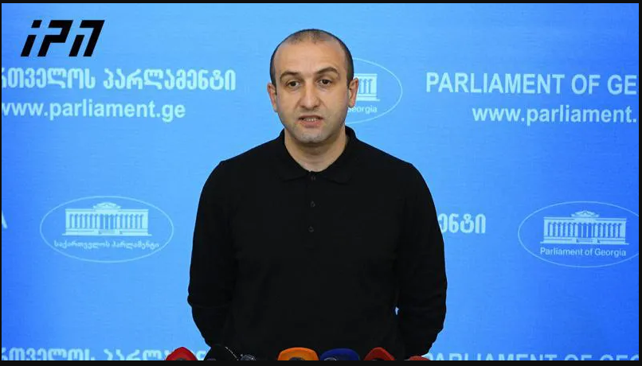

"მოვითხოვ ქუჩაში გამოხვიდეთ, 11 მარტს აქციაზე... - სახელმწიფოს გასარკვევი არ არის, რა არის რელიგია" - იაგო ხვიჩია
გამოდით ქუჩაში, თორემ სახეს გაგაძრობენ, ნუ იქნებით მონა - კი არ გთხოვთ, მოვითხოვ, ქუჩაში გამოხვიდეთ , - ამის შესახებ „გირჩის“ ლიდერმა, იაგო ხვიჩიამ „პალიტრანიუსის“ გადაცემა „360 გრადუსში“ ჯარის რეფორმის შესახებ საუბრისას განაცხადა. იაგო ხვიჩიას განცხადებით, 11 მარტს „გირჩი“ სავალდებულო სამხედრო სამსახურის გაუქმების მოთხოვნით აქციას გამართავს. "ერთადერთი ქართულ ჯარ გავლილი პარლამენტარი იყო ჰერმან საბო, ჰერმან საბომ ჯარში ისროლა 9 ტყვია და წელიწადნახევარი გაატარა „ვიშკაზე“. 2025 წლამდე, მაისიდან ადამიანებს გაიწვევენ „ვიშკაზე“ და წარმოიდგინეთ ის კომისრები, რომლებიც აქამდე იყვნენ გამწარებულები იმით, ხუთჯერ რომ მიუტანა ვიღაცამ „ბიბლიური თავისუფლების“ საბუთი და რომ ემუქრებოდა „აი, თქვენ ახლა ჯარში წაგიყვანთ, დედას გიტირებთო“, მაგ გინების აღსრულებას დაიწყებენ და ამიტომ გამოდით ქუჩაში, თორემ სახეს გაგაძრობენ, ნუ იქნებით მონა, მონა არ იმსახურებს პატივისცემას, მონების დედაც ვატირე. მე კი არ გთხოვთ, მოვითხოვ, რომ ქუჩაში გამოხვიდეთ... 11 მარტს აქცია გვაქვს და ველოდებით ყველა თავისუფლების მოყვარულ ადამიანს, არა მხოლოდ წვევამდელებს, მათ ოჯახის წევრებს, შეყვარებულებს, დედებს, ძმებს, დებს და ყველას იმიტომ, რომ დასაცავია თქვენი ოჯახის წევრები, ყურებში წაავლებენ ხელს და წაასხამენ მონად ცოტა ხანში“, - განაცხადა იაგო ხვიჩიამ. იაგო ხვიჩიას თქმით, სახელმწიფო „გირჩს“ ებრძვის, რადგან „ბიბლიური თავისუფლების“ გაუქმების შემთხვევაში პარტია თვეში 20 000 ლარს დაკარგავს. "ჩვენ დაახლოებით თვეში 20 ათასი ლარი გამოგვდიოდა. წარმოიდგინეთ თვეში 20 ათას ლარზე გვებრძვიან იმის გამო, რომ იციან ეს ჩვენთვის მნიშვნელოვანი შემოსავალია. ჩვენ გვებრძვიან“, - განაცხადა იაგო ხვიჩიამ. ასევე, იაგო ხვიჩიას განცხადებით, პოლიტიკოსების გადასაწყვეტი არ არის „ბიბლიური თავისუფლება“ არის თუ არა რელიგია, რადგან ის უკვე წმინდა სინოდმა რელიგიად აღიარა. „სახელმწიფოს გასარკვევი არ არის რა არის რელიგია და რა არა, წმინდა სინოდმა მაღიარა მე რელიგიად, როცა თქვეს, რომ ზიარების და ჯვრისწერის უფლებას არ მისცემდნენ „ბიბლიური თავისუფლების“ წევრებს, მანდ თქვეს, რომ რელიგია ვართ. რელიგია არის თუ არა ამის გარკვევასთან არაფერ შუაშია არც მიშა სარჯველაძე და არც რომელიმე სხვა ოპონენტი, ერთადერთ, ვისაც ამის განმარტების კომპეტენცია გააჩნია, არის საქართველოს მართლმადიდებელი ეკლესია და მისი წმინდა სინოდი“, - განაცხადა იაგო ხვიჩიამ.
